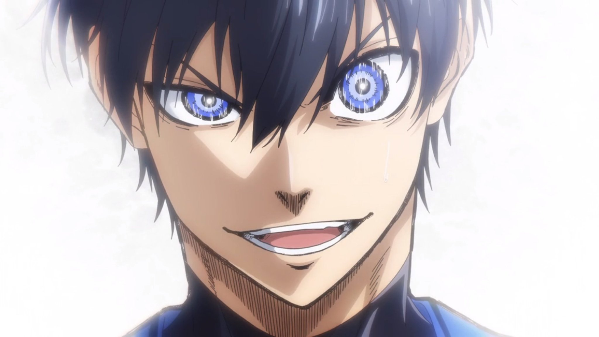

<!DOCTYPE html>
<html lang="en">
<head>
    <meta charset="UTF-8">
    <meta name="viewport" content="width=device-width, initial-scale=1.0">
    <link rel="stylesheet" href="mystyle.css">
    <title>Isagi Yoichi</title>
</head>
<header>
    <h1>Isagi Yoichi: The Egoist</h1>
</header>
<body>
    
  
    <main>
        
        
        <br>
    
    
        <section id="quotes-section">
            <h2>This is about Isagi's quotes</h2>
            <blockquote> <cite="https://bluelock.fandom.com/wiki/Yoichi_Isagi">
                No matter how much you try to understand other people's hearts, people aren't able to change others. And that's why every time, you have to change yourself     
            </blockquote>
            <blockquote> <cite="https://bluelock.fandom.com/wiki/Yoichi_Isagi">
                You shouldn't aim to be the one that gets chosen but the one that chooses     
            </blockquote>
            <blockquote> <cite="https://bluelock.fandom.com/wiki/Yoichi_Isagi">
                There's no value in success if you can't reproduce it    
            </blockquote>
            
            
        </section>
        <section id="facts-section">
            <h2>This page is about Isagi Yoichi, the egoist who will save Japan's soccer to win the World Cup.</h2>
            <p>We are a company dedicated to providing the best services to our customers.</p>
            <table>
                <tr>
                    <th>Characteristics</th>
                    <th>Examples</th>
                    
                </tr>
                <tr>
                    <td>Adaptive</td>
                    <td>He observed his opponents and adjusted his playstyle to boost his teammates and find weaknesses in his opponents.</td>
                </tr>
                <tr>
                    <td>Selfless</td>
                    <td>He plays with the best and worst kinds of teammates for optimal plays to get a goal.</td>
                </tr>
                <tr>
                    <td>Logical</td>
                    <td>Even in dire situations, he is constantly thinking and working towards his goals and doesn't let his emotions take over.</td>
                </tr>
            </table>
        </section>
        <section id="links-section">
            <h2>Links</h2>
            <ul>
                <li>
                    <a href="https://bluelock.fandom.com/wiki/Yoichi_Isagi">Isagi Yoichi wikipedia</a>
                </li>
                <li>
                    <a href="https://www.youtube.com/watch?v=TgWO5WgfDPA&pp=ygURaXNhZ2kgZGlyZWN0IHNob3Q%3D">Isagi's direct shot</a>
                </li>
                <li>
                    <a href="https://youtu.be/iu9QN0KhVso?si=XZvPZ5HghXg5KUOc&t=78">Isagi "devoured" one of his teammates</a>
                </li>
            </ul>
        </section>
    </main>
</body>

</html>